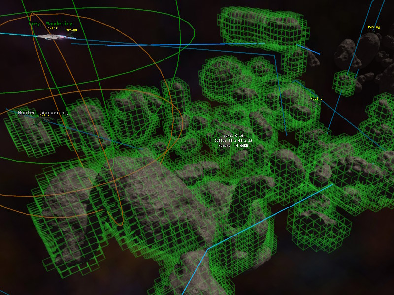
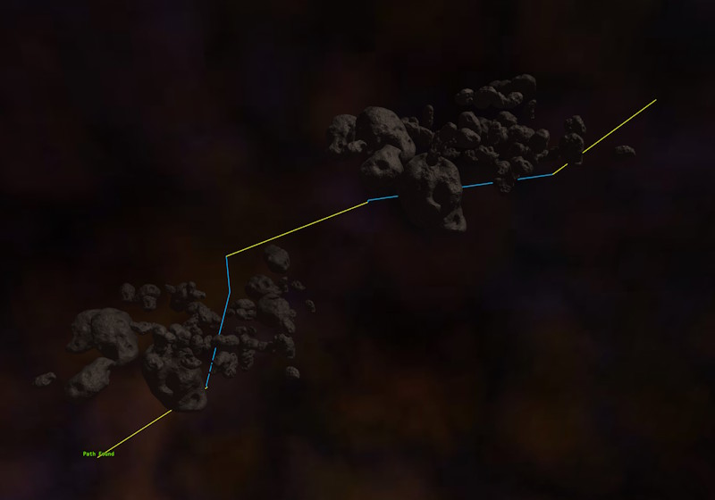

3D Voxel Navigation
Voxel navigation is used for objects that move freely through 3D space, such as flying creatures, submarines or spaceships. Whereas the runtime navmesh describes walkable surfaces, a voxel grid describes which parts of the volume are blocked and which are free.
Voxel Grids
The navigable space is described by one or more voxel grid components. Each grid is a box of a fixed size that is subdivided into voxels of a fixed edge length. Once the scene starts simulating, the collision geometry inside the box is rasterized into the grid, and every voxel that is touched by a triangle is marked as occupied. All other voxels are free.
Only geometry of the collision layer that is configured on the grid is taken into account, which allows you to exclude detail geometry or objects that should not block navigation.

Voxelization happens once, a few frames after the simulation started. It is not updated afterwards, so objects that move at runtime don't affect the grid.
Grids are managed by the ezAiVoxelWorldModule. Its IsReady() function returns true once voxelization has finished. Before that, path searches fail. The module also provides FindGridsInBox() to find all grids in an area.
Path Searches
Path searches use A* through free voxels. A search may span multiple grids. Pathfinding is always done within a single grid at a time. If the destination lies outside the grid that is currently searched, the search only looks for a way out of that grid, and then continues in the next grid on the way to the destination. Space that is not covered by any grid is treated as free. This means that grids only need to be placed around areas that actually contain obstacles, and that the space in between is crossed in a straight line.
Path searches are limited by the number of A* iterations per grid, and by the number of grids that a path may pass through. Both are exposed as properties on the components that do the searching.

Visualization
To see the occupied voxels of all grids in a scene, either enable the Visualize property on a grid component, or set the CVar AI.VoxelGrid.Visualize to true.
To check whether the grids in a scene produce the desired paths, use the voxel path test component.
Moving Along a Path
The voxel navigation component does both the path search and the steering of a game object along the resulting path. However, it mainly exists to give you a sample implementation for how a steering behavior can look like. If it doesn't fit what you need, you are encouraged to write a custom steering behavior for your use case.